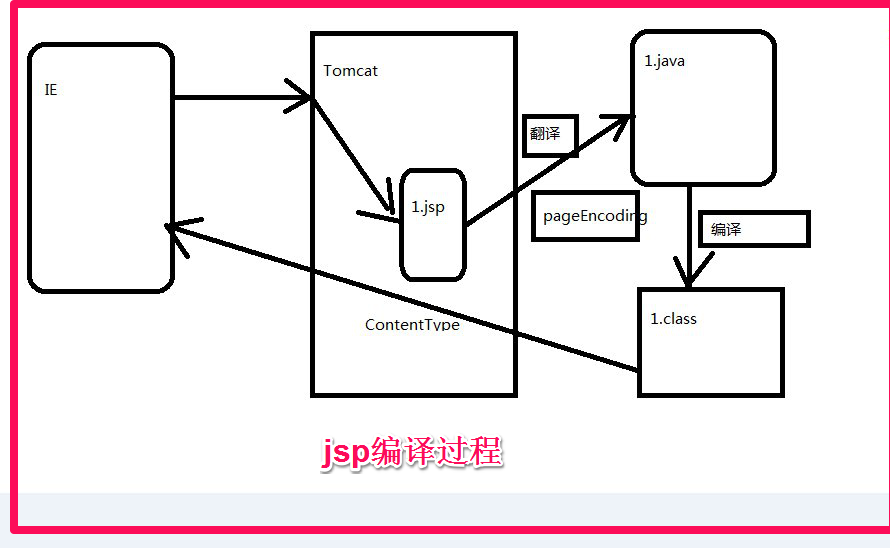
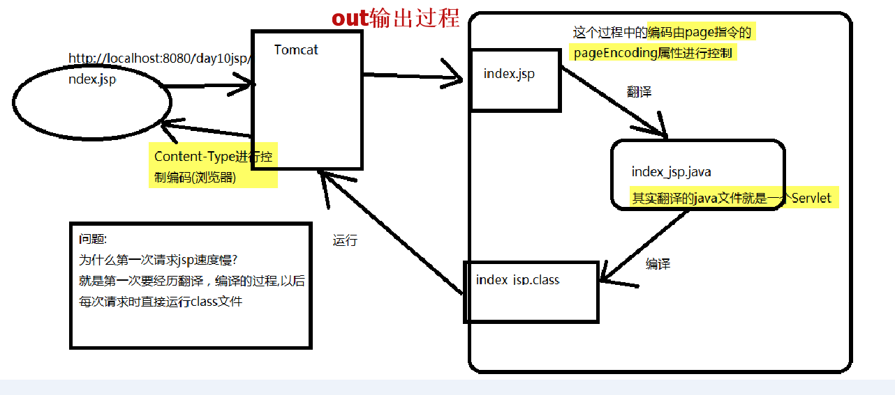

一、Jsp页面运行的过程
第一次访问jsp页面时，会在work子目录下产生jsp文件所对应的java文件，然后将java文件进行编译成.class文件，sp文件经过翻译后会形成一个Servlet。


第一次访问jsp页面时，会在work子目录下产生jsp文件所对应的java文件，然后将java文件进行编译成.class文件，sp文件经过翻译后会形成一个Servlet。

如果设置了某个JSP页面的errorPage属性，那么在web.xml文件中设置的错误处理将不对该页面起作用。

二、最佳的技术实践
使用JSP页面实现展示，用Servlet来实现程序逻辑控制,这样JSP页面更加容易维护。它们各自负责各的，servlet只负责响应请求产生数据，并把数据通过转发技术带给jsp，数据的显示jsp来做。
三、jsp组成部分：
JSP模版元素JSP表达式JSP脚本片断JSP声明JSP注释JSP指令JSP标签JSP内置对象如何查找JSP页面中的错误1、模板元素：JSP页面中的HTML内容JSP模版元素定义了网页的基本骨架，即定义了页面的结构和外观。2、JSP表达式<%=变量或表达式 %>声明一个表达式,注意表达中不能有分号作用：是用于实现输出结果
3、JSP脚本片断（对应雨service()方法的方法体）
<% 多行java代码 %>定义一个小脚本
JSP脚本片断中只能出现java代码，不能出现其它模板元素，
单个脚本片断中的Java语句可以是不完整的，但是，多个脚本片断组合后的结果必须是完整的Java语句，例如：
<%
for (int i=1; i<5; i++){
%>
<H1>www.it315.org</H1>
<%
}
%>
4、JSP声明：在声明中不能使用jsp的九个内置对象
<%！
java代码%>
Jsp声明中的java代码被翻译到_jspService方法的外面。
JSP声明可用于定义JSP页面转换成的Servlet程序的静态代码块、成员变量和方法 。
5、JSP注释
<%-- --%>JSP注释 它不会加入到service(),在客户端也查看不到
<% %>小脚本中可以写java注释 // /* */
<!-- --> 代表是html注释
它主要是通过out.write(“<!-- -->);
6、JSP指令：page,include,taglib--->语法：<%@ 指令 属性名="值" %>
JSP引擎而设计的，它们并不直接产生任何可见输出，而只是告诉引擎如何处理JSP页面中的其余部分。
6.1page指令
<%@ page
[ language="java" ]
[ extends="package.class" ] 代表继承的父类,默认继承HttpJspBase
[ import="{package.class | package.*}, ..." ] 导入哪些包 (类似于java中的import导包)
[ session=“true | false” ]//true创建session对象[ buffer="none | 8kb | sizekb" ] 默认8K,也可以设置none,它与out.write(“a”)有关，因为out写入数据时要写入到缓存（buffer来对缓存进行控制）
[ autoFlush="true | false" ]
[ isThreadSafe=“true | false” ] false才继承SingleThreadModel接口
[ info="text" ]
[ errorPage="relative_url" ]
[ isErrorPage="true | false" ]
errorPage属性的设置值为一路径（相对或绝对），如果以“/”开头，表示相对于当前WEB应用程序的根目录（注意不是站点根目录）.可以在web.xml文件中使用<error-page>元素为整个WEB应用程序设置错误处理页面
如果设置了某个JSP页面的errorPage属性，那么在web.xml文件中设置的错误处理将不对该页面起作用。
[ contentType="mimeType [ ;charset=characterSet ]" | "text/html ; charset=UTF-8" ]
JSP引擎会根据page指令的contentType属性生成相应的调用ServletResponse.setContentType方法的语句。
page指令的contentType属性还具有说明JSP源文件的字符编码的作用。
[ pageEncoding="characterSet | ISO-8859-1" ] 指明了从磁盘上读取文件用什么编码
[ isELIgnored="true | false" ] 表明要不要执行EL表达式，默认false代表执行
%>
如何解决JSP引擎翻译JSP页面时的中文乱码问题
通过page指令的contentType属性说明JSP源文件的字符集编码page指令的pageEncoding属性说明JSP源文件的字符集编码
6.2include指令
<%@ include file=“被包含组件的绝对URL或相对URL"%>
所实现的是静态包含，发生在产生java代码的阶段
<jsp:include />动态包含:
会产生两个java文件，它是在运行时把被包含的对象引入进来

6.3、aglib指令去引入一个标签库
<%@taglib uri="http://java.sun.com/jsp/jstl/core" prefix="c" %>
7、jsp标签
JSP标签也称之为Jsp Action(JSP动作)元素，它用于在Jsp页面中提供业务逻辑功能，避免在JSP页面中直接编写java代码，造成jsp页面难以维护。
<jsp:include>标签
<jsp:include page="relativeURL | <%=expression%>" flush="true|false" />
<jsp:forward>标签
<jsp:forward>标签
<jsp:forward page="relativeURL | <%=expression%>" />
<jsp:param>标签
<jsp:param>标签
实现参数传递,通常与<jsp:include>和<jsp:forward>一起使用
当使用<jsp:include>和<jsp:forward>标签引入或将请求转发给其它资源时，可以使用<jsp:param>标签向这个资源传递参数。
8、映射jsp
<servlet><servlet-name>SimpleJspServlet</servlet-name><jsp-file>/jsp/simple.jsp</jsp-file><load-on-startup>1</load-on-startup ></servlet>……<servlet-mapping><servlet-name>SimpleJspServlet</servlet-name><url-pattern>/xxx/yyy.html</url-pattern></servlet-mapping>
9、jsp的九大内置对象
9.1、out对象：
只有向out对象中写入了内容，且满足如下任何一个条件时，out对象才去调用ServletResponse.getWriter方法，将out对象的缓冲区中的内容真正写入到Servlet引擎提供的缓冲区中：
设置page指令的buffer属性关闭了out对象的缓存功能
out对象的缓冲区已满整个JSP页面结束9.2、pageContext对象：是JSP技术中最重要的一个对象，它代表JSP页面的运行环境，这个对象不仅封装了对其它8大隐式对象的引用，它自身还是一个域对象，可以用来保存数据。并且，这个对象还封装了web开发中经常涉及到的一些常用操作，例如引入和跳转其它资源、检索其它域对象中的属性等。pageContext获得其他对象：

pageContext对象的方法getException方法返回exception隐式对象getPage方法返回page隐式对象getRequest方法返回request隐式对象getResponse方法返回response隐式对象getServletConfig方法返回config隐式对象getServletContext方法返回application隐式对象getSession方法返回session隐式对象getOut方法返回out隐式对象pageContext封装其它8大内置对象的意义
public void setAttribute(java.lang.String name,java.lang.Object value)public java.lang.Object getAttribute(java.lang.String name)public void removeAttribute(java.lang.String name)
pageContext对象中还封装了访问其它域的方法
public java.lang.Object getAttribute(java.lang.String name,int scope)public void setAttribute(java.lang.String name, java.lang.Object value,int scope)public void removeAttribute(java.lang.String name,int scope)
代表各个域的常量
PageContext.APPLICATION_SCOPEPageContext.SESSION_SCOPEPageContext.REQUEST_SCOPEPageContext.PAGE_SCOPE
重点：四大域对象findAttribute方法 （*重点，查找各个域中的属性）PageContext类中定义了一个forward方法和两个include方法来分别简化和替代RequestDispatcher.forward方法和include方法。10、如何查找JSP页面中的错误10.1、JSP页面中出现JSP语法格式，或被翻译成的Servlet源文件中出现了Java语法问题不能通过编译时，JSP引擎将提示这类错误发生在JSP页面中的位置（行和列）以及相关信息。10.2、JSP页面翻译成的Servlet程序在运行时出现异常，Java虚拟机将提示错误发生在Servlet源文件中的位置（行和列）以及相关信息。
pageContext（称之为page域）
request（称之为request域）
session（称之为session域）
servletContext（称之为application域）
request（称之为request域）
session（称之为session域）
servletContext（称之为application域）
哪种情况下用哪种域对象。
1、request：如果客户向服务器发请求，产生的数据，用户看完就没用了，像这样的数据就存在request域,像新闻数据，属于用户看完就没用的
2、session：如果客户向服务器发请求，产生的数据，用户用完了等一会儿还有用，像这样的数据就存在session域中，像购物数据，用户需要看到自己购物信息，并且等一会儿，还要用这个购物数据结帐
3、servletContext：如果客户向服务器发请求，产生的数据，用户用完了，还要给其它用户用，像这样的数据就存在servletContext域中，像聊天数据
1、request：如果客户向服务器发请求，产生的数据，用户看完就没用了，像这样的数据就存在request域,像新闻数据，属于用户看完就没用的
2、session：如果客户向服务器发请求，产生的数据，用户用完了等一会儿还有用，像这样的数据就存在session域中，像购物数据，用户需要看到自己购物信息，并且等一会儿，还要用这个购物数据结帐
3、servletContext：如果客户向服务器发请求，产生的数据，用户用完了，还要给其它用户用，像这样的数据就存在servletContext域中，像聊天数据